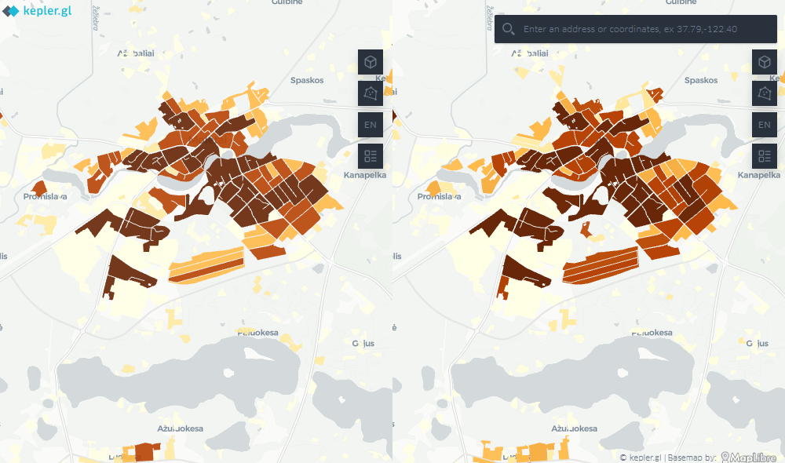
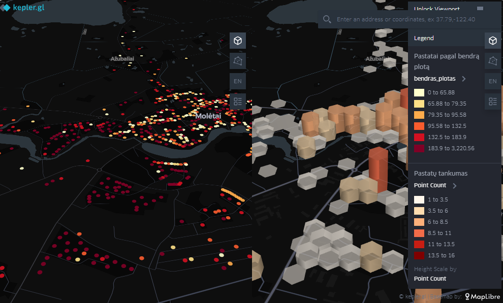
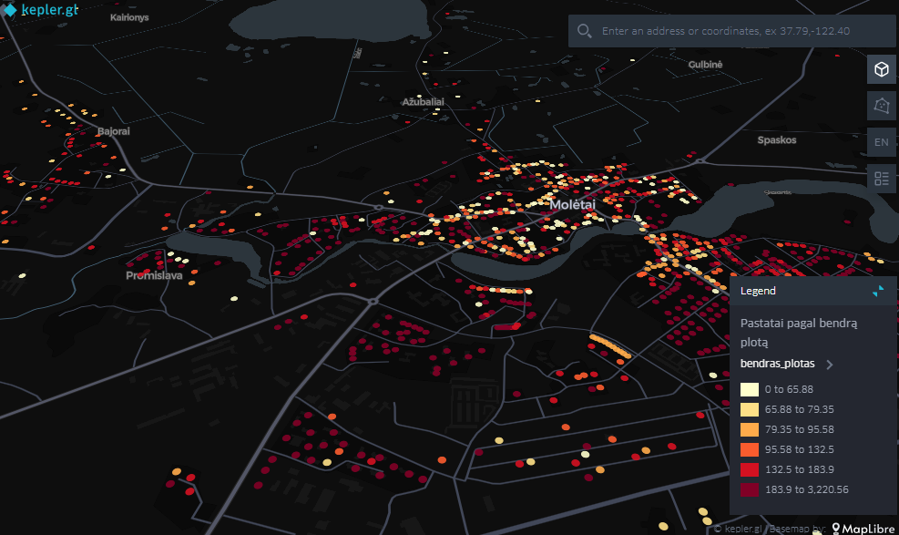
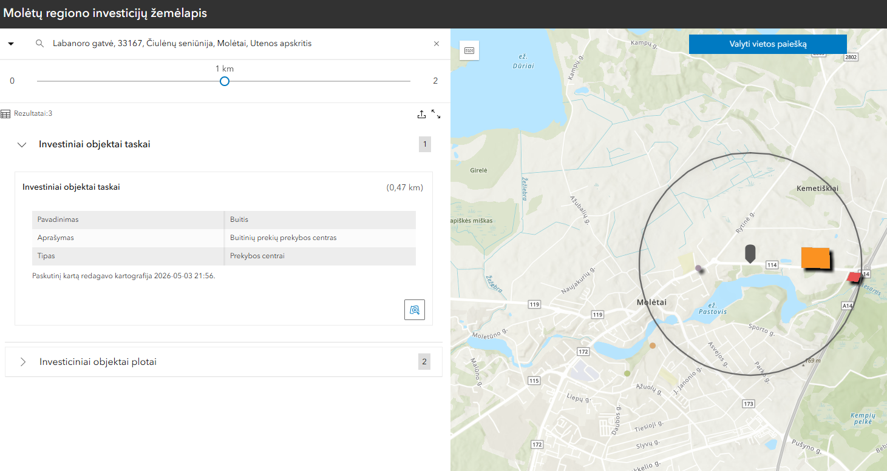
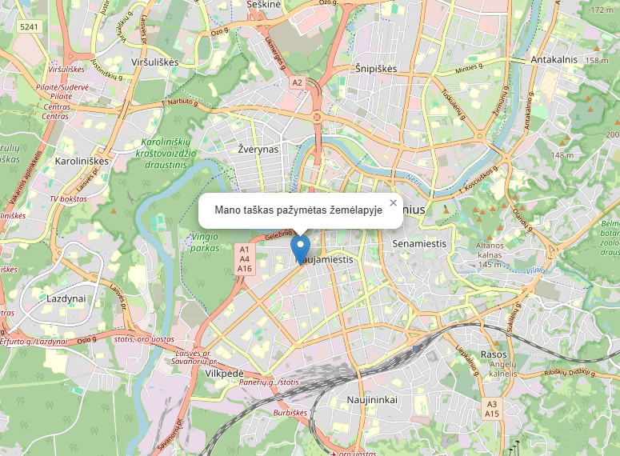
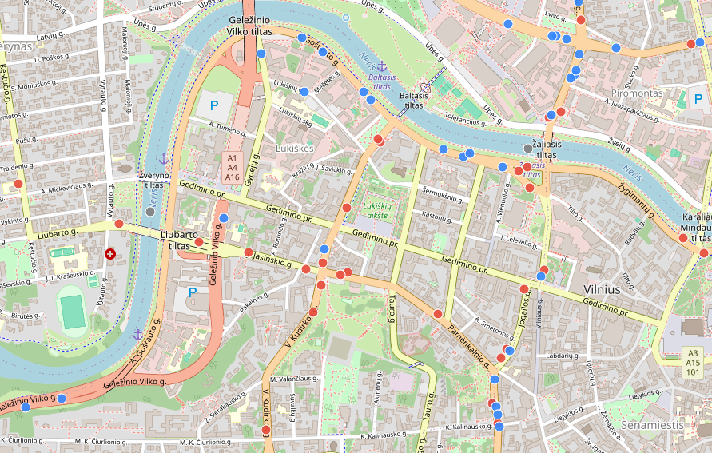

Gyvenamieji pastatai
Molėtų miesto gyvenamųjų pastatų žemėlapis su kvartalų padalijimo vizualizacija. Duomenys atvaizduoja pastatų tankumą, paskirtį ir išdėstymą miesto teritorijoje.
Atidaryti žemėlapį →
Kvartalų gyventojų tankumas
Miesto kvartalų žemėlapis rodantis gyventojų pasiskirstymą. Spalvinė gradacija leidžia greitai identifikuoti tankiai ir retai apgyvendintas teritorijas.
Atidaryti žemėlapį →
Pastatai pagal plotą
Analitinis žemėlapis su pateikta informacija apie pastatus, jų plotą ir erdvinį pasiskirstymą.
Atidaryti žemėlapį →
Praneškite apie naujus investinius objektus
Šiame žemėlapyje galėsite įvesti naujus investinius objektus ir peržiūrėti kitų vartotojų pasiūlytus.
Atidaryti žemėlapį →
Interaktyvaus žemėlapio kūrimas naudojant JS
Tai JS demonstracija kurti interaktyvius žemėlapius naudojan Leaflet JS biblioteką.
Atidaryti žemėlapį →
Realaus laiko viešojo transporto žemėlapis
Tai Leaflet žemėlapio demonstracija, kurioje pateikiami Vilniaus miesto viešojo transporto judėjimo realaus laiko duomenys.
Atidaryti žemėlapį →